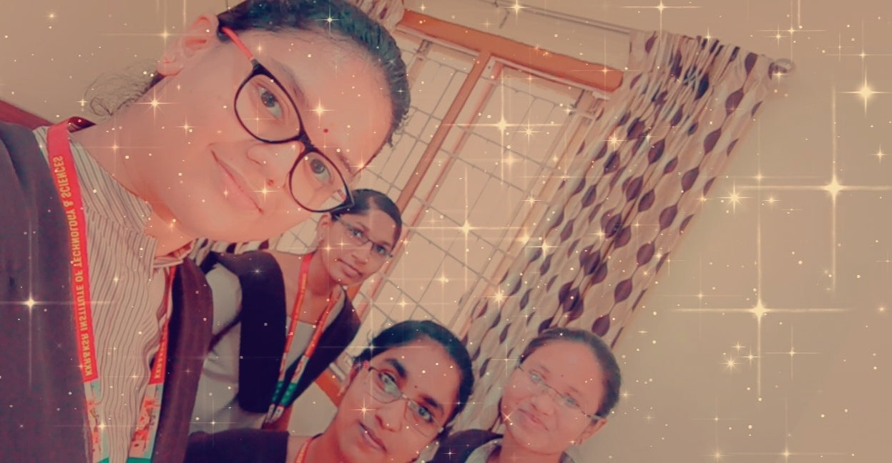

IMAGE VIEW
Floating image
float the image to the right:

I have many and one among them that i adore the most is having fun with my fellow friends.no matter what i do i can't prevent myself from having fun. we had group photos,combined studies,discussions over anything & nothing,remarkable marks, jutsified mistakes and lovable journey's..
we used to complete our syllabus just before the exams , seemz like one day batting. Deleting all study folders from our laptops/pc's after taking final exam.When my friend gives me her assignment to copy and i submit it before deadline and many more wonderful moments with my buddies..finally,
wherever I am and whatever I do, you people will always be the best part of my life
...